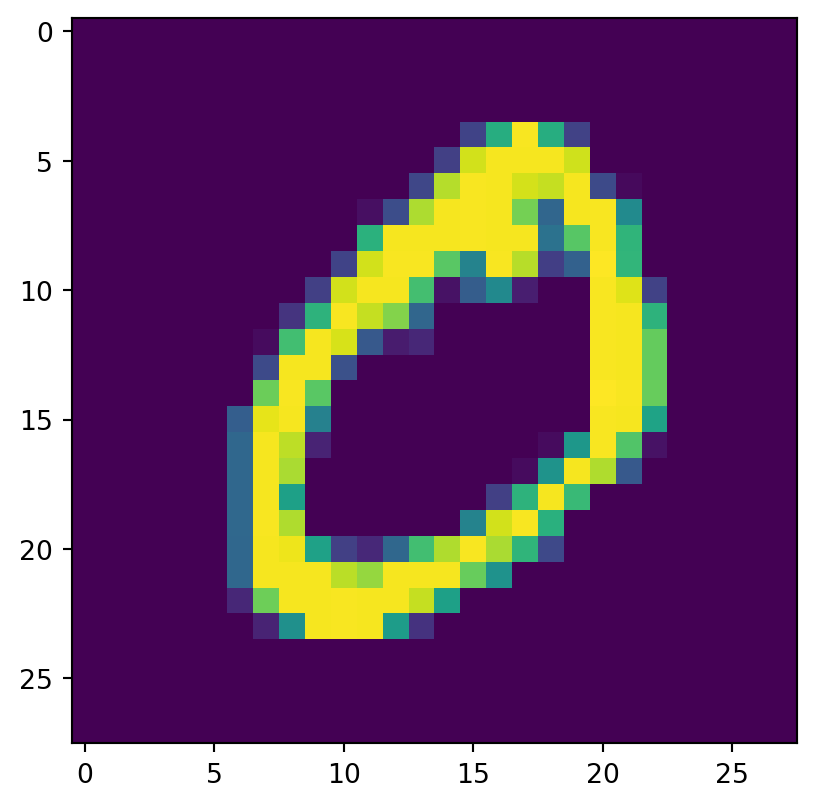

from tensorflow import keras
import numpy as np
import matplotlib.pyplot as pltAutoencoder
Nesse exemplo vamos ajustar um autoencoder com autoencoder na base do MNIST. Vamos também mostrar alguns dos possíveis usos do Autoencoder.
Vamos obter o banco de dados:
(x_train, _), (x_test, _) = keras.datasets.mnist.load_data()Podemos visualizar algumas imagens com:
plt.imshow(x_train[0])
plt.show()
plt.imshow(x_train[1])
plt.show()
plt.imshow(x_train[2])
plt.show()

Agora vamos definir o modelo. Nesse exemplo vamos usar uma forma um pouco diferente de definir o modelo que é usando classes. Dessa forma, podemos encapsular um pouco melhor o código. Também usaremos a keras.Sequential pela primeira vez, por isso vamos entender o que ele faz.
Os 3 modelos definidos a seguir são equivalentes:
# Usando a API funcional
input = keras.layers.Input(shape=(28,28,1))
output = keras.layers.Flatten()(input)
output = keras.layers.Dense(units=64, activation="relu")(output)
model = keras.Model(inputs=input, outputs=output)
# Usando a API sequencial
model = keras.Sequential([
keras.layers.Flatten(),
keras.layers.Dense(units=64, activation='relu'),
])
# usando a API de classes
class Modelo(keras.Model):
def __init__(self):
super(Modelo, self).__init__()
self.flatten = keras.layers.Flatten()
self.dense = keras.layers.Dense(units=64, activation="relu")
def call(self, x):
out = self.flattent(x)
return self.dense(out)A vantagem da API sequencial do Keras é ser menos verbosa. No entanto, didaticamente a API funcional é mais clara, pois ela nos força a pensar em qual é o nosso input e como as camadas são combinadas. Já a API de classes é útil para modelos mais complicados pois permite que possamos encapsular melhor os códigos. Note que podemos misturar todas as API’s no mesmo código e isso é considerado idiomático.
Agora vamos definir o autoencoder. Definimos ele em duas partes:
- Um encoder, que transforma a imagem do MNIST em um vetor.
- Um decoder, que pega um vetor e transforma de volta em uma imagem.
class Autoencoder(keras.Model):
def __init__(self, latent_dim):
super(Autoencoder, self).__init__()
self.latent_dim = latent_dim
self.encoder = keras.Sequential([
keras.layers.Rescaling(scale=1./255),
keras.layers.Flatten(),
keras.layers.Dense(latent_dim, activation='relu'),
])
self.decoder = keras.Sequential([
keras.layers.Dense(784, activation='sigmoid'),
keras.layers.Reshape((28, 28, 1)),
keras.layers.Rescaling(scale=255.)
])
def call(self, x):
encoded = self.encoder(x)
decoded = self.decoder(encoded)
return decodedPara incializar um modelo definido como uma classe usamos:
autoencoder = Autoencoder(latent_dim=64)Então podemos compilar:
autoencoder.compile(optimizer='adam', loss=keras.losses.MeanSquaredError())E ajustar:
autoencoder.fit(x_train, x_train,
epochs=10,
shuffle=True,
validation_data=(x_test, x_test),
verbose=2
)Epoch 1/101875/1875 - 2s - loss: 1555.8877 - val_loss: 605.1500 - 2s/epoch - 1ms/stepEpoch 2/101875/1875 - 2s - loss: 452.4213 - val_loss: 349.3282 - 2s/epoch - 948us/stepEpoch 3/101875/1875 - 2s - loss: 329.5283 - val_loss: 296.8387 - 2s/epoch - 969us/stepEpoch 4/101875/1875 - 2s - loss: 298.9903 - val_loss: 277.7961 - 2s/epoch - 958us/stepEpoch 5/101875/1875 - 2s - loss: 286.0212 - val_loss: 278.3241 - 2s/epoch - 943us/stepEpoch 6/101875/1875 - 2s - loss: 278.3516 - val_loss: 268.9713 - 2s/epoch - 932us/stepEpoch 7/101875/1875 - 2s - loss: 271.6905 - val_loss: 264.3178 - 2s/epoch - 924us/stepEpoch 8/101875/1875 - 2s - loss: 266.9784 - val_loss: 256.6068 - 2s/epoch - 962us/stepEpoch 9/101875/1875 - 2s - loss: 262.8771 - val_loss: 257.2297 - 2s/epoch - 1ms/stepEpoch 10/101875/1875 - 2s - loss: 259.5267 - val_loss: 254.3345 - 2s/epoch - 1ms/step<keras.callbacks.History at 0x7fe645536e50>Podemos usar o autoencoder para simplificar e depois reconstruir uma imagem:
encoded = autoencoder.encoder.predict(x_test)
decoded = autoencoder.decoder.predict(encoded)O ‘encoder’ do nosso autoencoder representa cada imagem como um vetor e esse vetor pode ser usado para comparar imagens, ou para ser input de algum outro modelo.
encoded[0]array([ 2.7154648, 3.3469846, 5.0955553, 4.928041 , 1.4984177,
3.5500624, 6.6044536, 4.8169136, 1.8987292, 3.7721162,
0. , 10.673604 , 3.438078 , 4.828475 , 3.6719105,
3.3354235, 3.8524048, 6.96551 , 5.3519597, 6.073485 ,
1.730966 , 3.6241064, 4.7289557, 5.14427 , 5.7000866,
7.9746943, 4.687333 , 3.6276262, 4.513113 , 2.5262182,
2.7582881, 4.5068583, 5.326924 , 1.5850337, 2.8732448,
2.304493 , 5.060994 , 5.387458 , 0.7613592, 1.4485734,
0. , 2.7385345, 3.6030219, 13.330053 , 2.6578474,
4.0867414, 4.838855 , 4.833501 , 3.9582207, 0. ,
3.4030182, 2.8294477, 5.486768 , 1.9036677, 3.8831449,
3.3715608, 3.5314097, 1.7339928, 3.1415982, 5.773363 ,
5.608508 , 1.4208441, 4.4426064, 2.196546 ], dtype=float32)Visualize a imagem antes e depois:
plt.imshow(x_test[0])
plt.show()
plt.imshow(decoded[0].astype("uint8"))
plt.show()